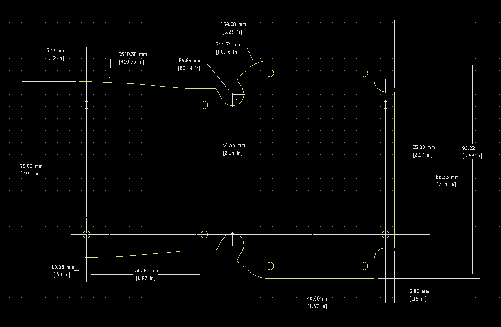

Project template containing the recommended board layout for Hammond Manufacturing 1553T-BAT:
Gray: 1553TTGYBAT - HM1345-ND
Black: 1553TTBKBAT - HM1343-ND
Gray: 1553TGYBAT - HM1339-ND
Black: 1553TBKBAT - HM1338-ND
Features:
- Ergonomically designed for a comfortable fit into the user’s hand.
- Perfect for instrument or mobile data enclosures requiring a keypad and display.
- Both the display and keyboard areas are recessed for membrane devices.
- Molded from flame retardant ABS plastic, choice of black or light gray - material carries a UL flammability rating of 94V-0.
- Handheld section of enclosure includes a dark grey overmold, soft plastic grip.
- Enclosure is assembled with M3-0.5 x 18 mm Philips machine screws, threaded into integral brass bushings. Perfect for applications when repetitive assembly and disassembly are required.
- Integral brass bushings are factory inserted into top half of the enclosure (see photos).
- Lap joint construction provides protection against access of dust and splashing water. Designed to meet IP54.
- P.C. board standoffs are molded into the case top & bottom halves
- Includes assembly hardware.
The "Dwgs.User" layer contains all critical dimmensions in milimeters[inches].
The "Edge.Cuts" layer contains the maximum board outline and holes to align with board standoffs.
PCB Preview:
